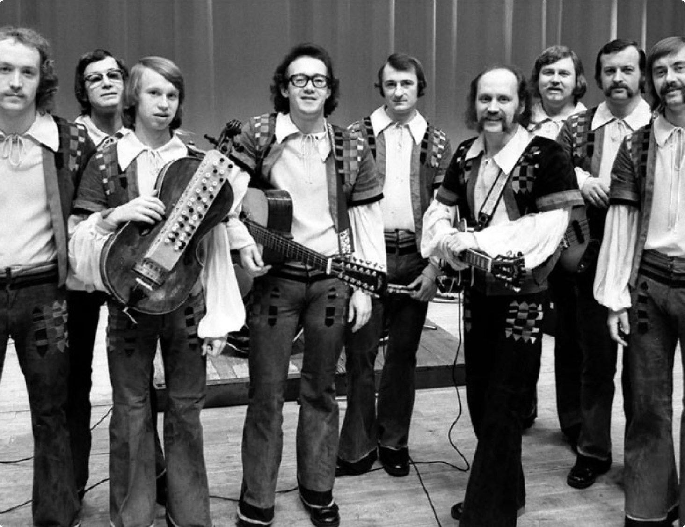
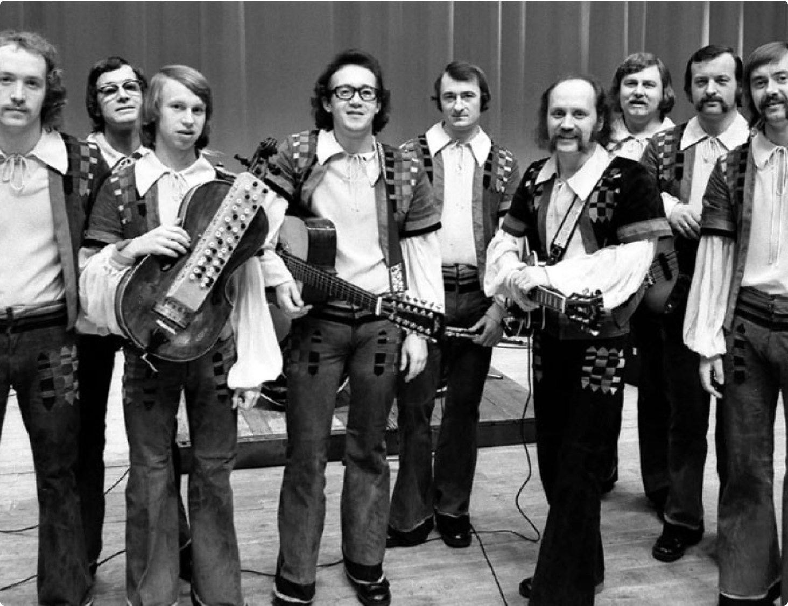

Узнай о русском роке —
направлении, зародившемся
в СССР в 60-е годы


Направление развивалось как за счёт самодеятельных коллективов, так и за счёт официальных ВИА. Своего расцвета русский рок достиг в 1980-е, благодаря ослаблению цензуры в СССР.
В этот период были созданы рок-клубы, появились и приобрели популярность такие группы, как «Кино», «Алиса», «ДДТ», «Ария», «Браво», «Nautilus Pompilius», «Чайф», «Гражданская оборона», а уже известные, например, «Аквариум» и «Машина Времени», начали издавать альбомы официально.

«Кино»

«Алиса»
«ДДТ»
«Гражданская оборона»
Русский рок — направление рок-музыки, зародившееся в СССР в 1960-е годы под влиянием западной рок-музыки.
«Кино»
«Алиса»
«ДДТ»
«Гражданская оборона»
Направление развивалось как за счёт самодеятельных коллективов, так и за счёт официальных ВИА. Своего расцвета русский рок достиг в 1980-е, благодаря ослаблению цензуры в СССР.
В этот период были созданы рок-клубы, появились и приобрели популярность такие группы, как «Кино», «Алиса», «ДДТ», «Ария», «Браво», «Nautilus Pompilius», «Чайф», «Гражданская оборона», а уже известные, например, «Аквариум» и «Машина Времени», начали издавать альбомы официально.
Рок в СССР появился в 1960-е годы. К середине 1960-х в Москве и Ленинграде сформировались бит-группы, на первых порах исполнявшие кавер-версии зарубежных хитов. Среди этих групп были такие звёзды московского рока 1960-х как «Сокол», «Скифы», «Скоморохи» .
С широким распространением битломании практически в каждой школе создавалась своя рок-группа. Многие из этих коллективов потом стали главными лицами сцены 1970-х («Рубиновая атака», «Аргонавты», «Удачное приобретение», «Машина времени»).

«Рубиновая атака»
«Аргонавты»
«Сокол»
«Машина времени»

«Рубиновая атака»
«Аргонавты»
«Сокол»
«Машина времени»
Рок в СССР появился в 1960-е годы. К середине 1960-х в Москве и Ленинграде сформировались бит-группы, на первых порах исполнявшие кавер-версии зарубежных хитов. Среди этих групп были такие звёзды московского рока 1960-х как «Сокол», «Скифы», «Скоморохи» .
С широким распространением битломании практически в каждой школе создавалась своя рок-группа. Многие из этих коллективов потом стали главными лицами сцены 1970-х («Рубиновая атака», «Аргонавты», «Удачное приобретение», «Машина времени»).
 
«Песняры»
Параллельно независимой рок-сцене существовала официальная (и от того более известная) сцена советских вокально-инструментальных ансамблей, ставших символом 1970-х в советском роке также, как прогрессив и арт-рок. Бывшие веянием времени, многие ВИА исполняли музыку, близкую к року (например, «Песняры», «Ариэль», «Цветы», «Поющие гитары»), в то время в них играли иногда полными составами бывшие звёзды рока 1960-х.
Некоторые советские композиторы — Д. Тухманов, Ю. Антонов, — старались совместить традиции эстрадной песни с современными музыкальными идеями, идущими в том числе из западной рок-музыки. В начале 1970-х на пластинках-миньонах выходили кавер-версии «Битлз», а на концертах все группы обязательно исполняли сегмент, состоявший из кавер-версий.
01
«Пикник» в Ленинграде
02
«Воскресение» в Москве
03

«Урфин Джюс» в Свердловске
04

«Сектор Газа» в Воронеже
05

«Раббота Хо» в Киеве
06
«Зазеркалье» в Ростове-на-Дону
Хотя в русском роке существуют все те же жанры и стили, что и в мировом, у него есть и свои национальные особенности, связанные с использованием русского мелоса. Кроме того, русский рок делает акцент на поэзию и подачу текста. Иногда «русский рок» рассматривают как отдельный жанр в музыке или в поэзии.
С момента возникновения русский рок почти всегда был пацифистским, такие группы как «Аквариум», «Наутилус Помпилиус», «Кино», Lumen, «ДДТ», записали ряд антивоенных песен. Это связано с философией хиппи и гуманистическим посылом отечественной литературы (Толстой, Чехов, Платонов, Шаламов, Бродский). В контексте молодёжной культуры он русский рок был не молодёжным направлением, но естественным продолжением культурной традиции советского народа.

«Наутилус Помпилиус»